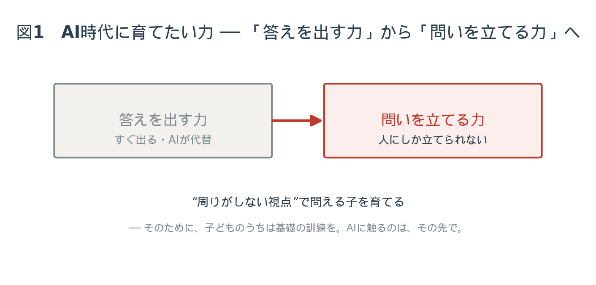
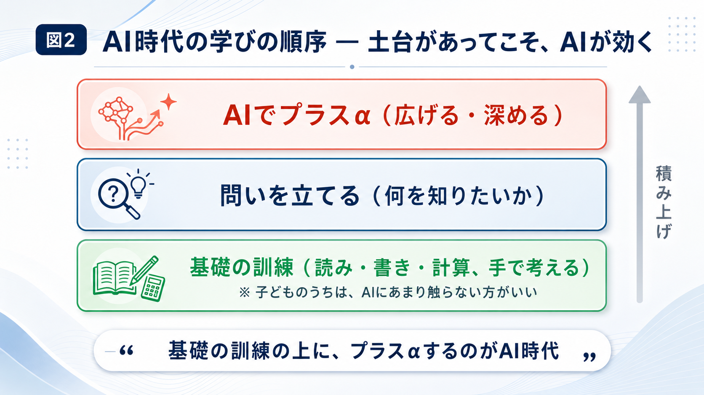
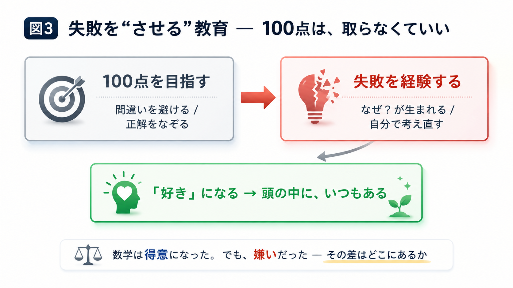
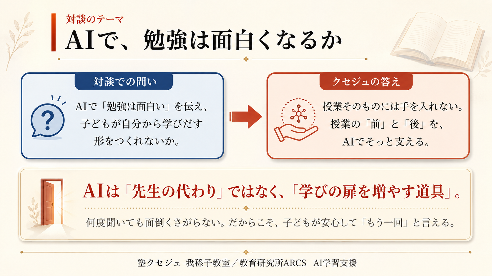
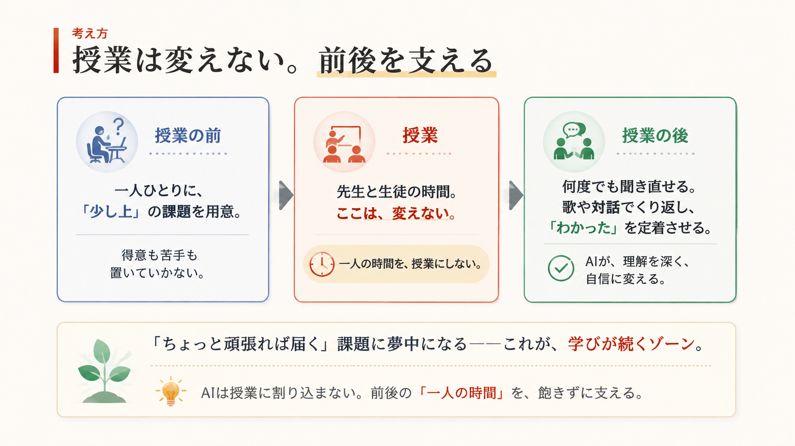
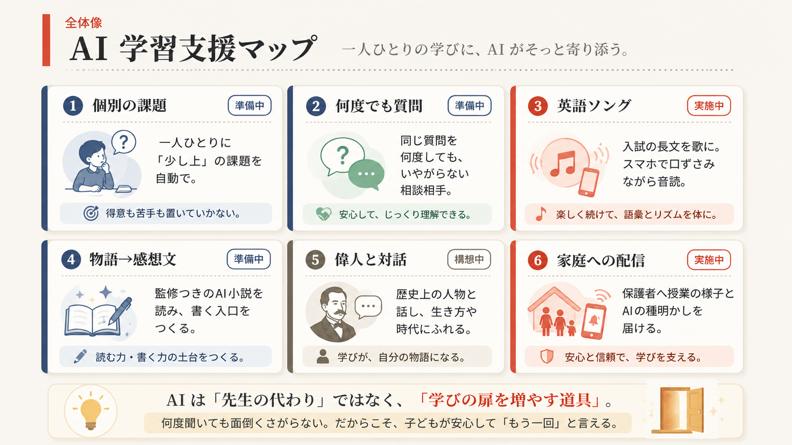
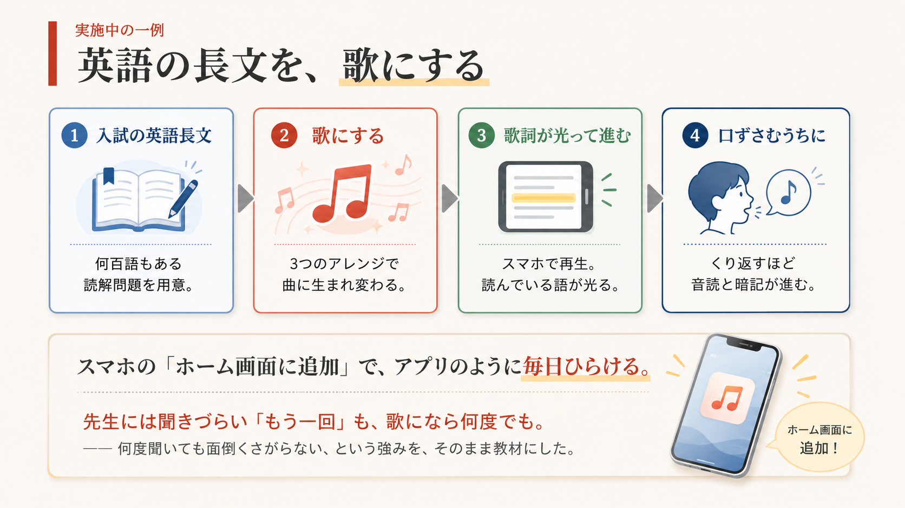

第一部 ── 十年後が、見えない
二夜目のテーマは、教育。中村には、中学二年生の娘がいます。話は、その実感から始まります。
中村娘は毎日、勉強もして、学校にも塾にも部活にも行って、めちゃくちゃいい青春を過ごしているなと思うんです。でも、十年後、大人になったとき、どういう仕事があるのかが、まったく見えていない。AIもある。だからこそ、本当に教育が大事だと思うんです。
管野今、教育しかやれることがないんじゃないか、というくらいですよね。
中村ただ、難しいのは、親自身が今の世界を把握していないと、子どもにどういう教育をさせたいかが見えてこない。すごく難しい時代だと思います。
管野前回のお話では、AIを使いこなす人間は、あらかじめ勉強をちゃんとして、人間力・教育力を持っていないといけない、ということでした。とすると、今やっている学校教育も、大事だということになりますね。
第二部 ── 答えではなく、問いを
§1 ── 子どものうちは、AIに触りすぎない
中村詰め込み式の知識や、地名のようなものは、それなりに覚えないといけないと思います。ただ、僕は子どものうちは、AIにあまり触らない方がいいと思っているんです。
管野触らない方がいい。それは、なぜですか。
中村AIと向き合ったときに大事なのは、AIに対して何を質問するか ── その「問う力」だからです。答えは、すぐに出てきてしまう。子どものうちにその答えの出し方に慣れてしまうと、問う力が育たない。みんな、同じような質問をAIに投げます。でも、普通の質問をすれば、普通の答えしか返ってこない。周りの人がしないような、別の視点から質問できる ── そういう子を育てる教育が、これから必要なんです。
管野そうすると、教科書や黒板に書いてあることを、ただノートに写して覚える ── 明治以来、百六十年ほど続いてきた一斉授業1のやり方だと、AIにいい質問ができる子には、なりにくいと。
中村人によるとは思いますが、ノートを取るにしても、覚えるために書くのではなく、「書くこと」自体が目的になってしまっていることがある。授業を受けることが目的化して、「授業を受けた結果、何をするのがゴールなのか」を、教える側もわかっていない。「何のために勉強するのか」という問いが、僕らを含めて、まだしっかり立てられていないんです。だからこそ、学校でも塾でも親でも、「何を勉強させるか」を自分たちで考えないといけない。

§2 ── 宿題を、AIでズルできる時代に
管野宿題が出て、「問題を解いてきなさい」と言われる。すると子どもは、家でAIに打ち込めば、答えが出てしまいますよね。AIを使って宿題をズルすることもできる。そうならないためには、どうすればいいんでしょう。
中村もう、「答えを出すこと」を教育にしない方がいいのかもしれない。考えさせる。答えは一つじゃなくてもいい。
管野大抵のことは、数学にしろ理科にしろ、一応正解が決まっていて、そこにどうたどり着くかが教育になっている。でも、答えにたどり着くことよりも、そこに至るまでの「プロセス」。回答にはたどり着かないけれど、誰も考えたことのない独特の解き方をする子がいる。そういう子が、案外、学者になったりするんですよ。「答えはマルかバツか」という日本の教育方式は、もったいないなと思うんです。
管野できることは、先生と生徒の対話じゃないかと。「どうしてそう思うの？」と。そう問われたとき、「こういう根拠があります」と言えるには、子どもが授業に来る前の段階で、疑問を持ち、調べ、知識を持っていないといけない。その準備のための、家庭の教育力が重要になるんじゃないかと、常々思うんです。
正解のあるものと、ないもの
中村そこは切り分けが必要で。正解があるもの ── いわゆる数学の正解は、変わらない。それは、きちんと出せないといけない。でも、国語の「作者の気持ち」のようなものは、作者本人が解いても百点は取れないじゃないですか。
管野よく言いますね。作家が、自分の作品を使った入試問題を解いたら、間違えた、という笑い話。英語でも、うちの塾にネイティブの方が来たことがありますが、日本の文法問題を解いたら、百点満点で三十点で、「途中でできない」と言って帰ってしまいましたよ（笑）。
中村テストやゲームには、ルールに則って高得点を出す、という能力の鍛え方があって、それはそれで大事です。でも、百点は取らなくていいのかな、と。八十点から百点にする、その最後の二十点のために何時間もかけるより、八十点、九十点にしておいて、空いた時間を別のことに使ったほうがいい。
それでも、毎日の訓練は要る
ただし、と中村は釘を刺します。「基礎はいらない」という話ではない、と。
中村算数の問題は、解かないといけない。問題を解き続けていると、問題を見た瞬間に、答えが先に浮かぶようになるじゃないですか。サッカー選手が、ドリブルで相手を抜くとき、いちいち考えて抜いているわけじゃない。毎日練習しているから、試合で無意識に体が動く。あの「スーパープレイ」と同じで、算数の問題をたくさん解いて、自動的に答えが出せるようになる訓練は、めちゃくちゃ大事なんです。それができるようになった状態で、さらにプラスアルファするのが、AI時代の教育。基礎はみんなできてしまうから、その先をやる。

§3 ── 先生の仕事は、どう変わるか
管野そうすると、学校の先生、塾の先生の仕事は、どう変わるんでしょうね。
中村先生にもいろんな階層があると思うんです。「教えるプロ」なのか、「人生の先輩」としてのプロなのか、「社会人」としてのプロなのか。一人の先生が、教えるのはプロだけど、社会人経験がなくてビジネス感覚がない、ということもある。逆に、教えるのはちょっと下手でも、子どもに夢を与えられる ── そういう先生のほうが、役に立つ場面もある。だから、いろんな先生がいていいんじゃないかな。
管野知識をただ伝達するだけの教育ではなくなる。すると、社会人を引退して、人生経験が豊富で、人間の心理に詳しい人が、物語について深く解説したり、みんなで議論し合ったり ── そういうことが必要になってくる。
失敗を、させる
中村あとは、「しくじり先生」じゃないですけど、人生でめちゃくちゃ失敗した人。
管野失敗学、という言葉もありますね。若いうちにいろいろ失敗した人ほど、後半の人間としての成長が大きい ── この歳になると、見ていて本当にそう思います。
中村さらに言えば、失敗を「させる」教育。どんどん失敗させて、「これは苦手だ」「失敗したけど、もっとやりたい気持ちが出てきた」と気づかせる。失敗しないように、レールの上を進ませると、できているように見えるけれど、そこから外れた瞬間に、全部終わってしまう。いろいろ失敗して、いろんなところを見て、「自分が本当にやりたいのは何なのか」を育てる場所になればいい。
§4 ── 学問を、物語で語る
ここから、対話はいちばん熱を帯びます。管野先生の、真骨頂です。
管野子どもたちが、なぜ勉強しないか。百六十年間ずっと、「正解があるに決まっているものを、ただ覚えなさい」とやってきたからなんですよ。「じゃあ、算数って何のためにあるのか」「算数をやると、どんな力がつくのか」を語れる先生が、ほとんどいない。国語は、英語は、歴史は、何のためにあるのか ── それを語れない。
管野私は、大人向けに歴史の授業をするセミナーをやっているんですが、ものすごく喜ばれるんです。日本史と世界史をバラバラにやるんじゃなくて、因果関係でつなぐ。ヨーロッパで起きた宗教改革の波紋が、めぐりめぐって日本に来て、キリスト教の伝来になる。「中学で習ったフランシスコ・ザビエルは、そういう経緯で日本に来たのか」とわかると、ものすごく面白い。なぜ数学という学問が発達してきたのか、その背景をさかのぼって語る。そうやって、算数の面白さを、背景も含めて語ると、「計算が苦手だから算数はダメだ」と思い込んでいた子が、変わるんです。
なぜ、分数の割り算はひっくり返すのか
ここで中村が、自分自身の「つまずき」を打ち明けます。多くの人が、身に覚えのある話です。
中村僕も経験したんですが、小学校の頃、みんなが算数で挫折するのって ── 掛け算はまあわかるとして、割り算になると、分数をひっくり返して掛けるじゃないですか。あれ、わからないですよね。今でも、僕は聞かれると「なんでだっけ」と考えないとわからない。小学生の段階で、そこで「わからない」という感じになって。でも、ひっくり返せばできるから、「そういうものだ」と思い込もうとする。深く考えると先に進めないから、大体の人は、そこで蓋をするんです2。
管野私は塾を経営していた頃、定理や公式を丸暗記させなかったんですよ。「この公式が、どうしてできあがってきたのか」を、さかのぼって教える。中世の哲学者がいて、数学者がいて ── そういうストーリーとして語る。すると、小中学生でも関心を持つ。「割り算は分数をひっくり返す」と機械的に教えるから、機械的に覚えて、原理原則がわからないまま終わってしまう。それは、避けていました。
できることと、好きなことは、違う
中村それで、僕はどうなったかというと ── ひっくり返す理由をブラックボックスにしたまま、算数から数学へ進んで、結果、数学はめちゃくちゃ得意になったんです。でも、嫌いだったんです。
管野わかります。点数は悪くない。
中村点数は取れる。でも、問題を解くのが、自分の中で嫌いだった。だから、最終的に、理系の道には進まなかった。世の中には、「できるけど、好きじゃない」という人がたくさんいると思うんです。伸びるのは、できて、かつ好きな人。
管野学生時代の「得意」と、本当に自分に向いているかは、一致しないことが多い。それで、社会に出て一、二年で挫折する人が、今すごく多いんです。「数学ができるから理系へ」と進んで、行き詰まる。
中村知り合いにも、大学で数学が全然わからなくなって挫折した人がいます。でもその人は、今、誰でも知っているようなアーティストになった。本来、芸術家だったんですよ。

数学者は、アーティストに似ている
中村岡潔3さんも、「数学者はアーティストに似ている」と言っていました。物理学者は、理詰めで公式を積み上げていく。でも数学者は、先に「こういうものだ」という好きな世界観を見て、それを証明するために、一生をかける。それは、アーティストと同じだと。
管野でも、物理学者も「理詰め」とは言うけれど、量子力学の研究者なんて、恋人と会っているときに、突然、波動関数の式がポーンと浮かんできた、という話がある4。アーティスティックな感性は、学問にも必要なんですよね、究極は。
中村数学が嫌いだけど解ける人は、たぶん、恋人といるときに式は浮かばない（笑）。嫌いなことは、考えたくないですから。
管野好きだったら、頭の中にいつもある。だから、AIを使って勉強の面白さを教えていけば、動機づけができる。勉強って、面白いと思ったら、勝手にやりだすんですよ。それが一番の理想で。AIを、教育にうまく導入できたらな、と思います。中村さん、ぜひそういうプログラムを考えてくださいよ。
ご家庭で話してみてください
この対話を「読んで終わり」にしないために、今日から試せる小さな三つを置いておきます。
1.「なぜ、そう思うの？」と聞いてみる。
答えが合っているかより、そこに至った道すじを尋ねてみてください。「どうしてその答えになったの？」と。プロセスを言葉にすることが、問う力の入口になります。
2. 学問を、物語で語ってみる。
「なぜ分数の割り算はひっくり返すのか」でも、「ザビエルはなぜ日本に来たのか」でも。答えを教えるのではなく、その背景の物語を、面白がって話してみてください。
3.「できる」と「好き」を、分けて見る。
点数が取れる科目が、本当に好きな科目とは限りません。お子さんが時間を忘れて夢中になっていることは何か。そこにこそ、伸びしろがあります。
この対話の先に ── ARCSのAI学習支援
対談で語られた「授業は変えず、その前後をAIでそっと支える」という考え方を、教育研究所ARCS（塾クセジュ 我孫子教室）では実際のかたちにし始めています。全体像と、進行中の一例をご紹介します。



